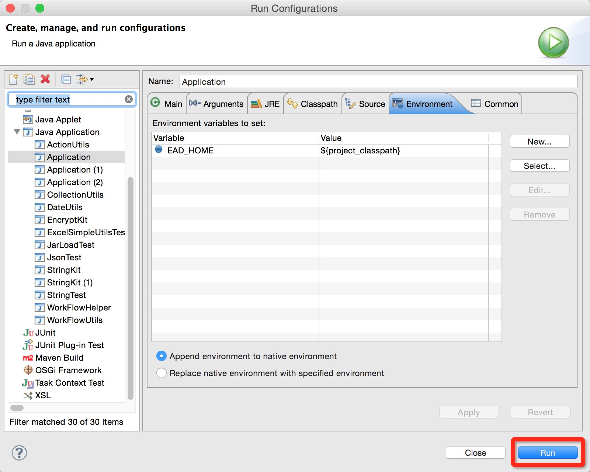
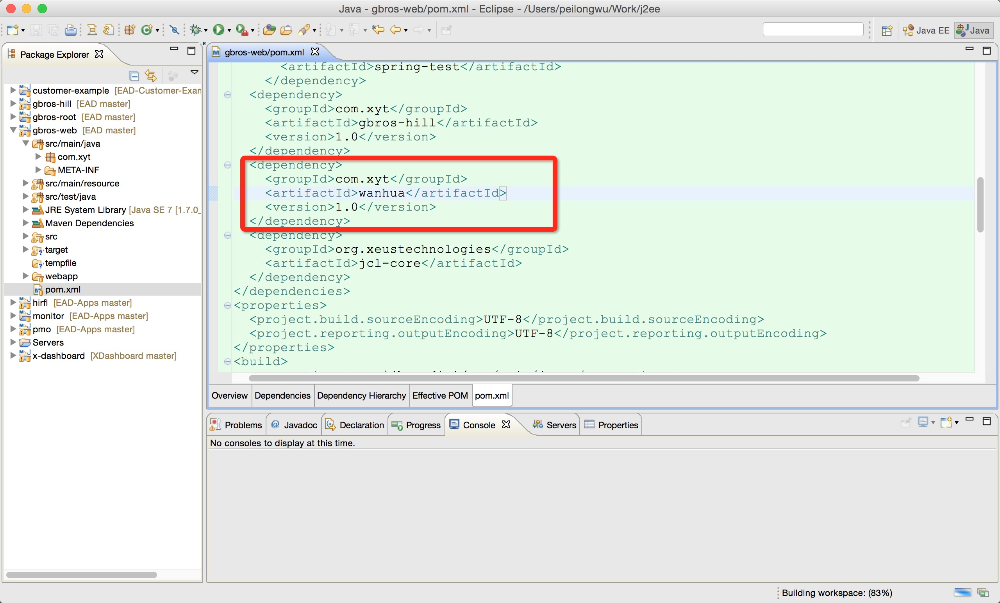

EAD 平台 Tomcat 下部署
1. 部署
把打包好的 gbros-web-1.0.war 名称修改为：gbros-web.war，然后把该 war 包部署到服务器 Tomcat环境中。
拷贝位置为：Tomcat > webapps_pro > war 下。
2. 设置环境变量及设置配置数据库参数
第一步：在 Windows 系统中建立 EAD_HOME 系统变量，变量值为 EAD 根路径；

第二步： 拷贝 EAD 配置文件至 EAD 根路径

第三步：修改配置数据库，配置数据；


3. Windows 下启动 Tomcat
第一种方式：Windows 服务方式启动
在 Windows 服务中启动 Tomcat 服务；

第二种方式：命令行方式启动
在 Windows 服务中，启动 Tomcat 或者在 Tomcat > bin 下，启动 startup.bat。
当看到以下界面时，说明启动成功：

Eclipse 中启动
设置启动参数
在启动Application主类时，设置启动参数EAD_HOME;
在Application点击右键：Run AS -> Run Configurations;

启动 EAD
参数设置完成后，点击Run，启动 EAD。 
注意，在启动之前，请确定 EAD 开发平台数据库配置是否正确；


扩展开发部署
Eclipse 中扩展开发测试
在进行 EAD 扩展开发时，需要在 gbros-web -> pmo.xml 中加入扩展开发 jar，然后启动 Application 进行测试；

Tomcat 下扩展开发部署
开发测试完成后，使用 Maven 进行打包，把打好的 jar 包拷贝至服务器环境，
拷贝路径为 Tomcat > webapps_pro > ROOT > WEB_INF > lib。
拷贝完成后重新启动 Tomcat 服务。